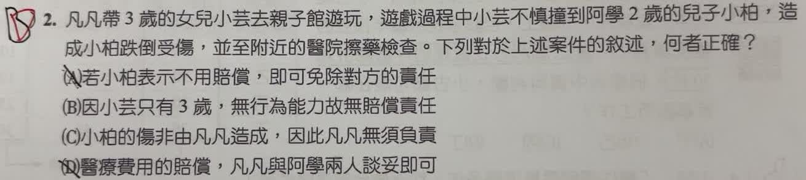

分享原卷｜第 2 題
完整原題
凡凡帶3歲的女兒小芸去親子館遊玩，遊戲過程中小芸不慎撞到阿學2歲的兒子小柏，造成小柏跌倒受傷，並至附近的醫院擦藥檢查。下列對於上述案件的敘述，何者正確？
(A) 若小柏表示不用賠償，即可免除對方的責任
(B) 因小芸只有3歲，無行為能力故無賠償責任
(C) 小柏的傷非由凡凡造成，因此凡凡無須負責
(D) 醫療費用的賠償，凡凡與阿學兩人談妥即可
先想一想，再查看答案、解說與原圖
原卷作答：B
正確答案：D。本題以雙方家長為孩子的法定代理人，醫療費用的民事賠償可由家長代理協議處理。
逐項解析
| 選項與原句 | 判讀 | 句意與判斷理由 |
|---|---|---|
| (A) 若小柏表示不用賠償，即可免除對方的責任 | 不選 | 小柏僅2歲，不能單憑自己的意思表示有效拋棄損害賠償請求權。 |
| (B) 因小芸只有3歲，無行為能力故無賠償責任 | 不選 | 行為能力是法律行為的概念，不能直接拿來判斷侵權責任；還須看識別能力及法定代理人的責任。 |
| (C) 小柏的傷非由凡凡造成，因此凡凡無須負責 | 不選 | 法定代理人可能須為幼兒造成的損害負責，不能只因自己未直接碰撞就排除責任。 |
| (D) 醫療費用的賠償，凡凡與阿學兩人談妥即可 | 應選 | 本題以雙方家長為孩子的法定代理人，醫療費用的民事賠償可由家長代理協議處理。 |
詳細說明與解題步驟
一、先分清兩種能力
未滿7歲屬無行為能力人，主要影響買賣、和解或拋棄權利等法律行為的效力。侵權行為的賠償責任則另看行為時有無識別能力，不能把兩者畫上等號。
二、判斷家長與孩子各自的角色
小柏不能自己有效說一句「不用賠」就拋棄權利。小芸造成損害，也不是因年紀小就代表受害人一定無法請求賠償。依民法第187條，無識別能力時原則由法定代理人負責；法定代理人如能證明監督並未疏懈，或即使相當監督仍無法避免，則有免責規定。不能教成父母在所有情形都必須賠償。
三、回到本題的民事爭議處理
在題目預設雙方家長具有法定代理權、也無代理權衝突等另行情節下，家長可以協議醫療費用，不必每件小額賠償都先告上法院，所以D最適當。是否實際成立賠償責任及金額，仍須依具體事實判斷。
核對依據：民法第13、187條（全國法規資料庫）。
https://law.moj.gov.tw/LawClass/LawSingle.aspx?pcode=B0000001&flno=187
核對註記：已核對題幹、全部選項與必要材料；教材對應課次未確認，歸綜合。
原圖（僅本題）
